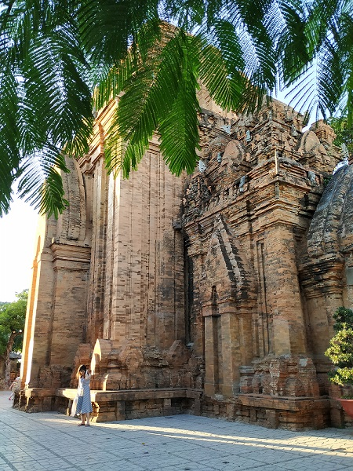
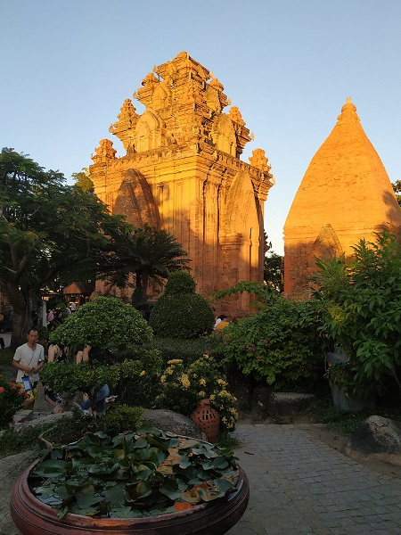
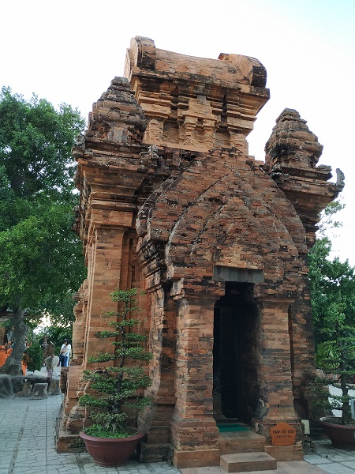

We liked walking, especially where there nothing else to do, like in Nha Trang. There always are opportunities to see something interesting during a rout. So this time we decidet to went to Po Nagar Towers by foot.
The weather was sunny and hot, but we walked along long shadowed streets and looked around with interest at thousands local cafes and shops. In one of them we bought amazingly tasty cold Vietnamese coffee with condensed milk. Thus we gradually approached a bridge.
The view was great! That bridge reminded us the one in Istanbul that connected two parts of land and that we easily acrossed almost every day. So without any doubt we went on a bridge.
In a middle of a bridge we understood that the sun was too hot, there was no shadow and we passed only a middle of the bridge in a best-case scenario. When we crossed the bridge we thought that we could have an overheat, our mood got worse when we saw that there weren't almost any cafes with air condition where we could have a rest. So we went and went until found a cafe, sat in a basement because only there were slightly cooler, but stank a paint. Only after some cold drinks we were brave enough to continue our rout.
Outside cafe we surprisingly discover that we were across the road from Towers. But there was second problem. It turned out that tourists were brought there by huge groups of 20 and more people. That place was just overcrowded. We sat in a shadow and just waited when all tourist would went away and the started sunset. In minutes like that I understand how much my husband loves me :)) he didn't say me a rough word and didn't blame me for I brought him to that place.



Of course we ordered a taxy to get to our hotel and all our way to hatel, sitting at a comfortable car with air condition we thought, why we didn't get a taxy to get to Po Nagar...
Summaries:
1 – Don't buy excurtion to Po Nagar, take a taxy and visit it befor sunset, where the view is beautiful and less people.